CLICK TO BEGIN
하나의 발견에서, 더 나은 경험으로.
오수한
Su Han OhINTJ(5w4)
좋은 경험에는 [분명한 이유]가 있다고 믿습니다.
흩어진 별들을 이어 하나의 별자리를 그리듯, 관찰과 분석을 통해 더 나은 경험을 그립니다.
사용자의 행동과 경험에 담긴 이유와 불편함을 세심하게 관찰합니다. 문제를 분석하고 흩어진 정보를 연결해, 사용자가 자연스럽게 이해하고 목적에 도달할 수 있는 직관적인 경험을 설계합니다.
Illustrator
 Photoshop
PhotoshopFigma
Aftereffect
 Visual Studio
Visual Studio
Power PointDISTANT SIGNALS AHEAD
SIGNAL RECEIVED
연락처가 연결되었습니다.
E-MAILosh0586@naver.com
PHONE010-4466-0586
[DEV] SH 3D 로고 GLB 필요